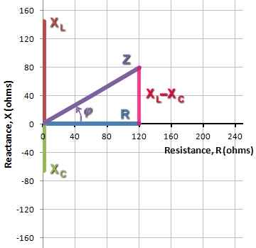
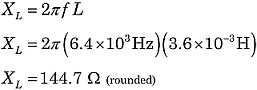
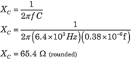
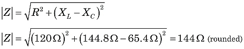

Calculating Impedance
In AC circuits, Ohm's Law takes the more general form: E = I⋅Z, where E is voltage and I is current, as before. The new term, Z, is impedance, a vector combination of:
- Resistance, R (in ohms), with voltage drops in phase with the current.
- Inductive reactance, XL (in ohms), with voltage drops leading the current by 90°.
- Capacitive reactance, XC (in ohms) with voltage drops lagging the current by 90°.
 f = 6.4 kHz R = 120 Ω L = 3.6 mH C = 0.38 μf |
|
Figure 1. Example RLC circuit |
|  |
|
Figure 2. Vector sum of R and XL−XC yields Z |
From the formulas for XL and XC, you can see that reactances depend on both the component values L and C, as well as the AC frequency, f:
 and
and

where f is the frequency in Hertz (or sec−1), L is inductance in Henries, and C is capacitance in farads. Because XL and XC are 180° different in phase, the total reactance X of a series circuit is XL−XC.
The familiar uses for Ohm's Law, such as series and parallel circuit calculations, still apply. However, you must now consider the competing vector contributions from resistances and reactances.
Phase angles and vectors
Let's find the total impedance of the circuit in Figure 1. Using the formulas above:
|  |  |
Constructing the impedance Z, the resistor contributes the horizontal component. The vertical component is the difference of the reactances: XL−XC. Then, Z is the vector sum of R and XL−XC, as illustrated in Figure 2.
In Figure 2, seeing that Z is the hypotenuse of a right triangle, we can use the Pythagorean Theorem and right-triangle geometry to evaluate Z.


So, in this circuit, we would witness the effect of an impedance of 144 ohms, with the current lagging behind the supply voltage at a phase angle of 33.5°.
As you might guess from the discussion above, it is quite possible for the inductive and capacitive reactances to exactly cancel under the right combinations of L, C, and f values. That is a very important condition known as resonance.